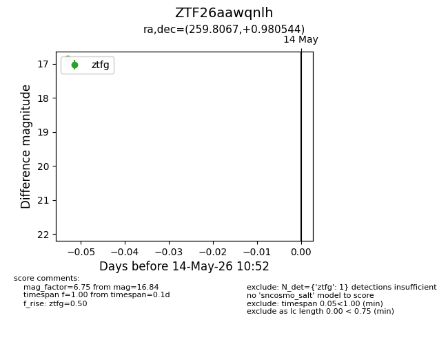
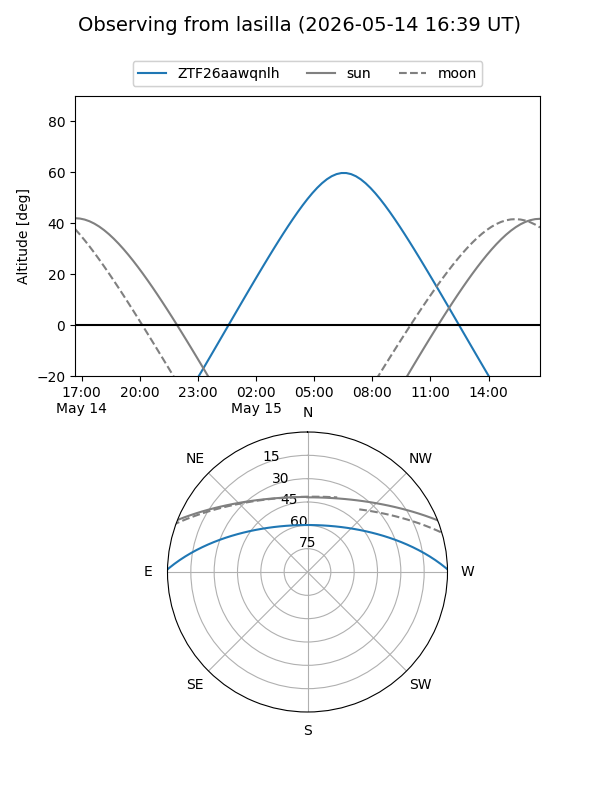
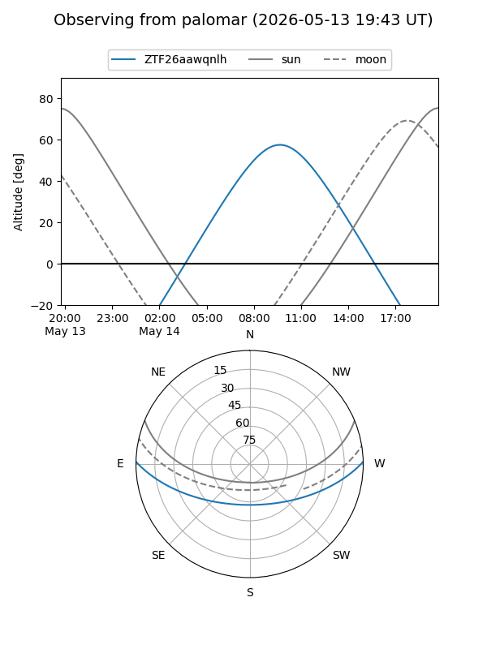

ZTF26aawqnlh
Target ZTF26aawqnlh at 2026-05-14 10:53
Aliases and brokers:
FINK: link
Lasair: link
ALeRCE: link
alt names
ZTF26aawqnlh (ztf,fink_ztf)
Coordinates:
equatorial (ra, dec) = 259.8067,+0.98054
equatorial (HMS+DMS) = 17:19:13.60,+00:58:49.96
galactic (l, b) = (22.8670,+20.87028)
Flags:
Photometry:
last ztfg=16.84
1 ztfg detections
Lightcurve

Visibility


Additional plots